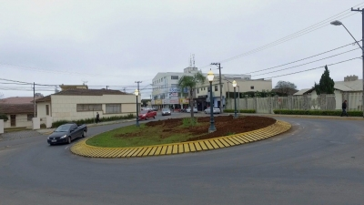
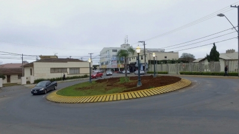

1º Temos muitas rotatórias...
Isso mesmo, Irati possui a fama de possuir muitas rotatórias, então, por que não conhece-las?

Isso mesmo, Irati possui a fama de possuir muitas rotatórias, então, por que não conhece-las?

Se você for de Curitiba como eu, irá estranhar como as pessoas aqui são amigáveis, claro possui suas exceções, mas não importa quem você seja, sempre terá alguém para te dar um "bão?".


Já vi muitas paisagens marcantes por aqui, e elas acontecem nos dias mais inesperados, aconselho a vir e ver por você mesmo.
E é isso, se quiser voltar para a página principal, clique no "clique aqui": clique aqui